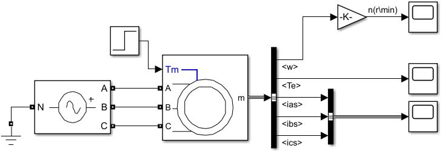
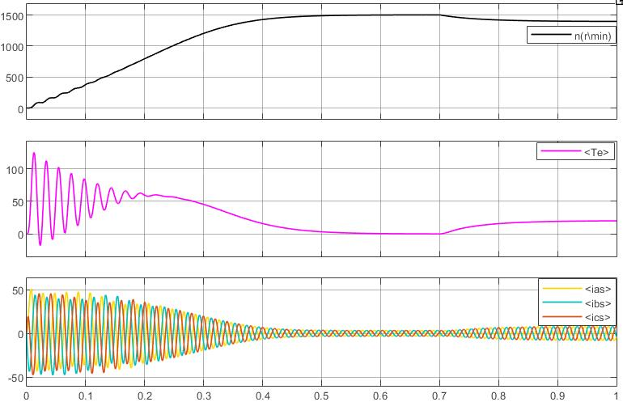
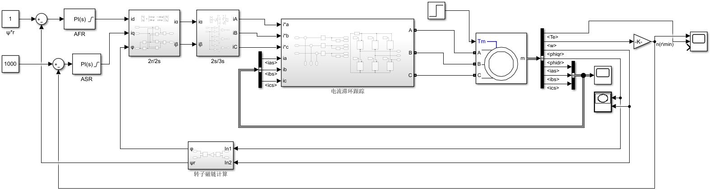
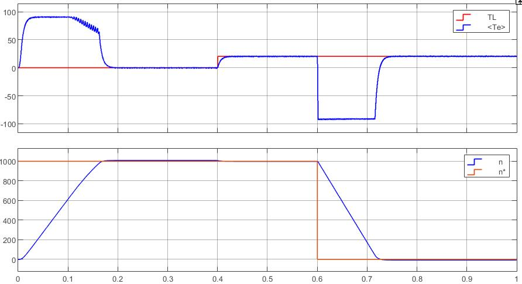
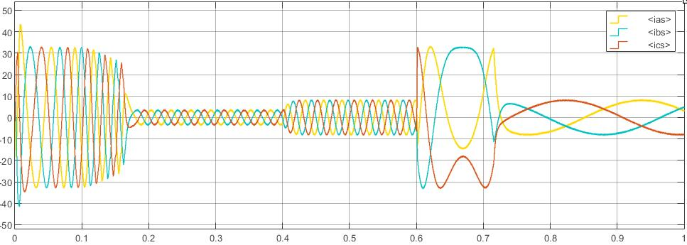
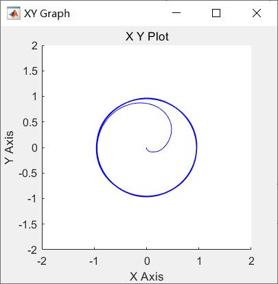

/*-----------------------------*/
三相异步电动机矢量控制 MATLAB 仿真
📅 2022-01-18
🔄 2022-01-18
⌚ Reading time: 1 min
📂
矢量控制或者FOC控制近些年逐渐走进日常消费电器了，在一些洗衣机，电动玩具的广告里甚至可以直接看到这个词，我觉得这对消费者来说要求还是有点高了😂😂。

FOC控制大规模的商业应用也能看出这是一种相当成熟的电机控制方法了，这里做一个异步电机的矢量控制仿真总结。
矢量控制基本思想
矢量控制这个名字的由来是控制方法里有坐标变换（矢量变换），FOC控制的全名是按照转子磁链定向控制，其含义是在坐标变换后把旋转坐标系的d轴方向固定在转子磁链方向。往往伴随的还有SVPWM这个词，这是一种调制方法，可以提高电压利用率，矢量控制不一定必须用到SVPWM的调制方法。
矢量控制系统比较复杂，整个系统由很多部分或者叫模块构成，每个模块又有不止一种方法实现，但是使用不同方法的模块实现的功能是一样的。因此比较先进的控制方法也是在整个老的系统结构上去优化一个模块。一个典型的就是无传感器控制，实际上是状态观测器用作传感器。
首先梳理一下矢量控制的基本思想：
对于他励式直流电动机来说，接线端子4个，两根为励磁绕组引出，两根电枢绕组引出，磁通和电枢电流可以分开单独控制，磁通恒定后电磁转矩就只和电枢电流有关了。
对于三相异步交流电机来说，接线端子有6个，如果是接成了Y型不引出中心线，那么端子有3个，这三根线进去的电流有一部分产生磁通，一部分产生电磁转矩，混叠在一起。这也是交流电机控制复杂的原因。
矢量控制的基本方法是使用坐标变换（矢量变换），核心思路就是把混叠在一起励磁电流和电枢电流分开来，单独控制励磁电流恒定，这样转矩就可以单独由电枢电流控制，和直流电机一样了。坐标变换只是我们看待问题的视角变了，实际电机物理系统的磁动势和功率是个客观量，因此变换原则是保持磁动势不变。分解出励磁电流和电枢电流后，按照给定值加以控制后，还需要再合成三相电流的给定值，让实际电流跟随三相给定电流。这就是基本的矢量控制思路。

根据上面的描述，关注这几个细节：
-
如何进行坐标变化。参考系的选取，怎么变才能达到分解电流为励磁分量和转矩分量。
-
转子磁链定向问题。在坐标变换中有个坐标系是和转子磁链一同旋转的，因此我们需要知道转子磁链的角度，在对励磁电流进行控制时，也需要知道磁链大小，因此转子磁链计算是要解决的一个问题。
-
PWM调制方式。电子电子变压变频器都是要去使用脉冲宽度调制的。在使用PWM时有个小问题，日常家用电220V，如果使用SPWM去产生220V的交流电，使用220V直流电做不到，日常讲的220V交流电是有效值，其标准的数学表达式为$$ u(t) = 220\sqrt{2}\sin(\omega t + \varphi) $$，因此如果使用SPWM调制方法，需要的直流电源为$$ 220\sqrt{2} \approx 311 \mathrm{V} $$，如果要产生有效值380电压的交流电，需要的直流电源约为537V。这就感觉很不舒服，因此如何用电压更小的直流电源产生有效值更大交流电，也是个需要解决的问题。
如果这几个细节都清楚了，那么矢量控制的核心原理及方法大概也就搞明白了。
在整个矢量控制细节结构上，还可以进行一些优化改进，比如：
-
进行转矩控制提高动态。这是矢量控制里的转矩控制，区别另一种思想直接转矩控制。虽然励磁电流和电枢电流解耦了，但是在控制励磁电流跟随给定的时候还是会有波动，因此为了更好的动态性能，在转矩波形影响转速前就对其进行控制，有两个常用的方法。
-
无传感器控制。转速控制需要转速值，一些磁链计算方法也要转速值，现在转速传感器也不想要了，使用算法充当转速传感器，比如状态观测器等一些转子位置估计方法，这也是近些年电机控制的一个新话题。
以上这些点，后面的仿真都会出现。
接下来就要开始做仿真了。
仿真电机参数
被控对象为一台三相笼型异步电动机(Triple-phase asynchronous motor)，铭牌参数：
- 额定功率$$ P_N = 3\mathrm{kW} $$
- 额定电压$$ U_N = 380 \mathrm{V} $$
- 额定电流$$ I_N = 6.9 \mathrm{A} $$
- 额定转速$$ n_N = 1400 \mathrm{r/min} $$
- 额定频率$$ f_N = 50 \mathrm{Hz} $$
- 极对数$$ n_p = 2 $$
- 定子绕组$$ \mathrm{Y} $$联结
由实验测得的数据：
- 定子电阻$$ R_s = 1.85 \mathrm{\Omega} $$
- 转子电阻$$ R_r = 2.685 \mathrm{\Omega} $$
- 定子自感$$ L_s = 0.294 \mathrm{H} $$
- 转子自感$$ L_r = 0.2898 \mathrm{H} $$
- 定转子互感$$ L_m = 0.2838 \mathrm{H} $$
- 转动惯量$$ J = 0.1284 \mathrm{kg\cdot m^2} $$
异步电动机的等效结构图
设置好参数以后，直接通上三相交流电，并在运行稳定后加上额定负载


FOC/CHBPWM
首先使用最基本的方式，数据全部使用电机输出数据，给定磁链幅值和转速，经过控制器后反变换回三相电流给定值，使用电流滞环跟踪PWM(CHBPWM)，仿真原理图

空载启动，在0.4秒加上额定负载，0.6秒制动，转速、转矩曲线

因为转子磁链计算使用的是真实值，所以效果还是不错的，ASR、ATR使用PI控制，参数随便给的，可以明显的看到和直流电机电流、电压闭环效果很接近，启动时有一段恒转矩（角加速度）时期，转速直线上升，制动的时候也是到了反向最大允许的电流。
三相电流

额定电流6.9A，这个过载倍数应该是可以接受的，当然过载也可以由积分限幅值根据实际电机性能、系统动态响应要求去调整。
观测到刚启动时转子磁链

FOC/CHBPWM/转子磁链直接定向
上面这个系统实际是没法用的，因为转子磁链这个东西没有直接的传感器可以测量，仿真的时候MATLAB里是直接给出来了，因此需要一种实际可用的找到转子磁链的方法。这就是转子磁链定向问题，有直接定向和间接定向。直接定向就是用能测量到的物理量算出来，直接定向方法由基于电流的和基于电压的。